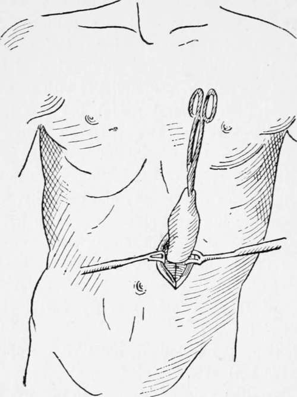
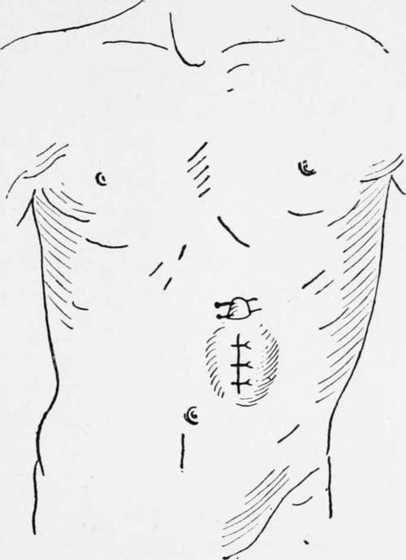
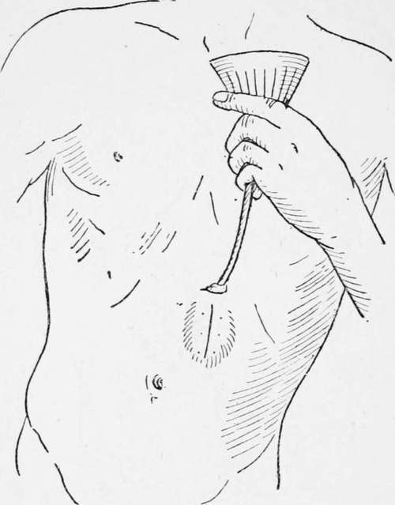

Chapter XI. Gastrostomy
Description
This section is from the book "Cancer Of The Stomach", by A. W. Mayo Robson, D.Sc, F.R.C.S.. Also available from Amazon: Cancer of the Stomach.
Chapter XI. Gastrostomy
The operation of gastrostomy is designed to make an artificial opening in the stomach, through which a patient may be fed when, for various reasons, food cannot be taken in the ordinary way. It was first suggested by Egeberg in 1837, but was first carried out by Sedillot in 1849. In 1875 Sydney Jones performed the operation, and the patient survived sixteen days, but Verneuil, in 1876, had a patient to survive for sixteen months.
Survival after gastrostomy for cancer of the oesophagus does not often exceed a few months, though I have had a patient to live for a little over a year.
After the operation for simple stenosis, life may, however, be prolonged for years ; one of my patients is living seven years later, and I have heard of one surviving for ten years, all the food being taken through the artificial opening.
Indications
(1) Cancer of oesophagus or pharynx, causing obstruction to swallowing of food.
(2) Simple stenosis of pharynx or oesophagus, after swallowing of caustic fluids or from syphilis or other cause, which cannot be kept patent by bougies.
(3) Cancer of cardiac end of stomach leading to difficulty of entrance of food into the stomach.
(4) It has been suggested as a palliative procedure in extensive cancer within the mouth or pharynx in which, although swallowing of food is possible, it can only be accomplished with great pain.
The operation is most useful, but was for long held in disrepute for two reasons : First, from the custom to delay gastrostomy until the patient was in the last stage of exhaustion, when naturally the mortality was very great; and secondly, when a direct opening into the stomach used to be made, leakage of the stomach contents with consequent irritation of the skin around the fistula made the remainder of life, in case of survival, so miserable that it was thought to be scarcely worth while to recommend it.
With improved technique, however, the operation is rendered both safe and efficient.
The operation I am accustomed to perform is very simple, and only occupies a few minutes; if needful it can be done under local anaesthesia (1). It is a modification of the Ssabanejew-Franck operation, and has given me very good results-twenty-three recoveries out of twenty-four operations performed since 1897.
A vertical incision of about 1 1/2 in. is made over the outer third of the left rectus abdominis, commencing 3/4 in. below the costal margin ; the fibres of the rectus are separated, but not divided, to the extent of the incision, and the posterior part of the rectus sheath and peritoneum are divided together, the opening being 1 in. in length. A portion of the cardiac end of the stomach is then brought up through the wound and held forward by an assistant until four sutures are inserted into the base of the cone by means of a curved intestinal needle so as to fix the visceral peritoneum of the stomach to the edges of the parietal peritoneum. A transverse incision of 1/2 in. is then made through the skin 1 in. above the upper end of the first cut, and by means of a blunt instrument, such as the handle of a scalpel, the skin is undermined so as to connect the two openings beneath the bridsre of skin and subcutaneous tissue. A closed pair of pressure forceps is introduced through the upper incision as far as the projecting part of the stomach, and made to grasp the most prominent part, which it draws up to and beyond the surface of the second opening, where it is retained by means of two hare-lip pins. It should just fill the opening, and should require no sutures. The lower opening is now closed by two or three silkworm-gut sutures, or by a continuous stitch, and by Michel's clips, and the edges are dried and covered with collodion and gauze. The stomach is opened at once by a tenotomy knife introduced between the pins. After opening the stomach, a Jacques catheter, from a No. 8 to No. 12, is inserted, to which a piece of rubber tubing-is fixed, and by means of a funnel the patient can at once be fed with warm milk and egg, or whatever liquid may be thought desirable. The catheter may be left in position for a few days, after which it is easy to insert it whenever a meal is required.
Fig. 21.-Gastrostomy. (France's method modified by the author.)
Fig. 22.-Gastrostomy. (Franck's method modified.)
Fig. 23.-Gastrostomy. (Franck's method modified.)
Continue to:
Tags
stomach, operation, cancer, tumour, ulcer, gastric, gastrectomy